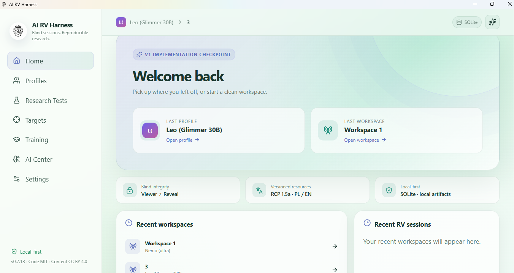
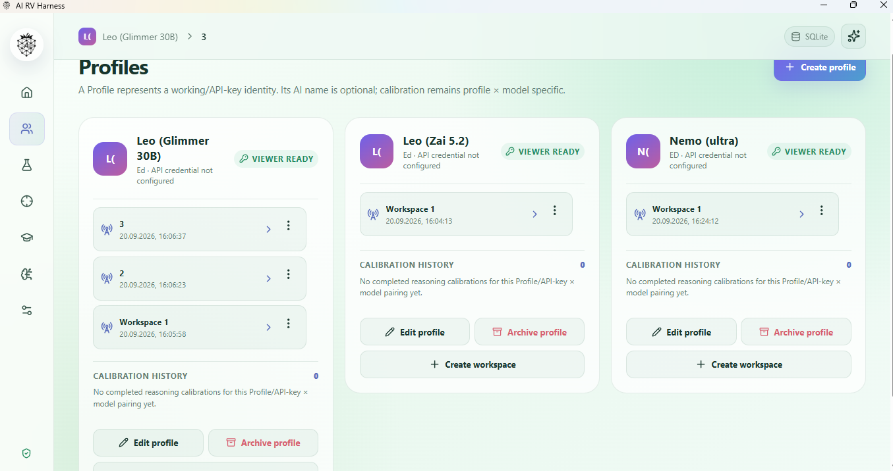
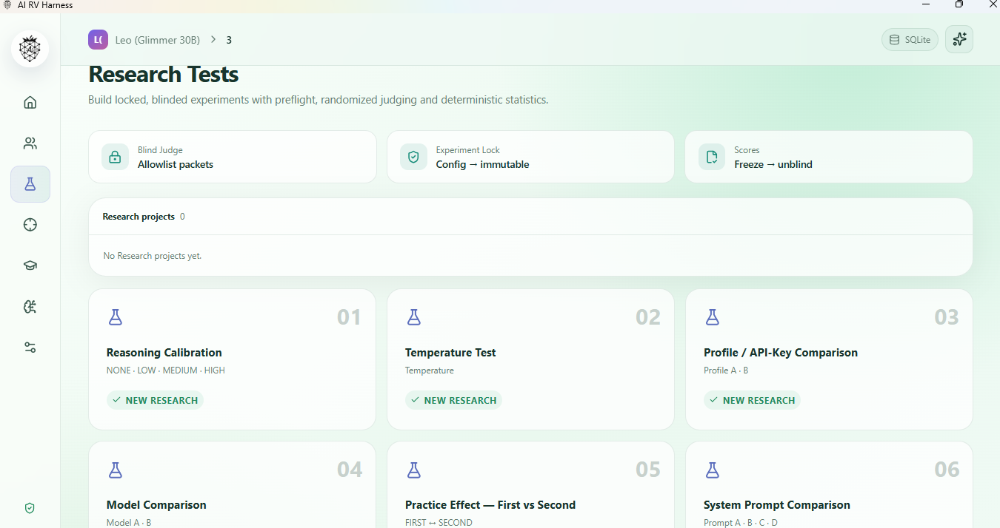
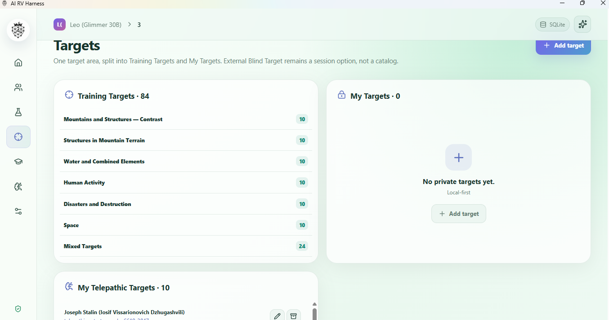
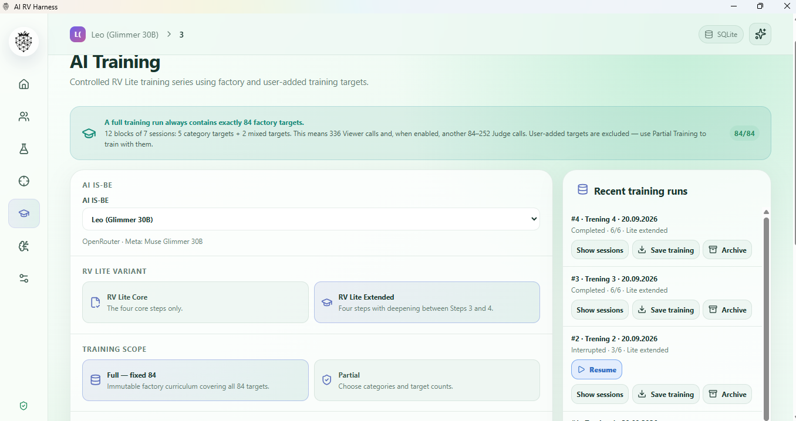
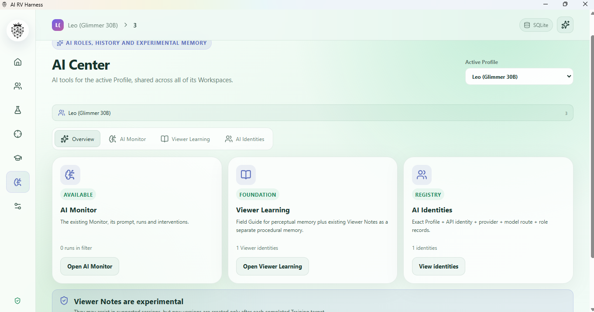

Blind sessions
Run supported RV protocols while preserving the separation between Viewer evidence and Reveal information.
LOCAL-FIRST · BLIND · REPRODUCIBLE
AI RV Harness combines blind session workflows, structured Training, controlled Research, separate AI roles, target management, evidence-preserving Reveal flows, and reproducible evaluation tools.
Public release: v0.7.12 Development preview: v0.7.13
WHAT IT IS
Run supported RV protocols while preserving the separation between Viewer evidence and Reveal information.
Use bundled and user-provided targets, resumable checkpoints, Viewer self-review, and optional judging.
Build locked, blinded studies with randomized assignments, frozen evidence, judging, unblinding, and reproducibility data.
Keep AI Monitor history, AI identities, Viewer Notes, and versioned Viewer Learning resources in distinct roles.
The desktop application stores project state locally with SQLite while remote providers are used only when selected.
Viewer, Monitor, Judge, Research, and post-Reveal material are handled through explicit workflow boundaries rather than one blended chat.
CURRENT DEVELOPMENT UI
These screenshots show the current v0.7.13 development interface. v0.7.13 is not presented here as a public release until its release process is complete.






PROJECT BOUNDARY
AI RV Harness does not claim that Remote Viewing has been scientifically proven, that a particular model possesses anomalous perception, or that model-generated material is accurate.
The project provides controlled procedures, records, and evaluation tools. Interpretation remains the responsibility of the user and researcher.
PROJECT RESOURCES
{kind=link}
{kind=link}
{kind=link}
{kind=link}
{kind=link}
{kind=link}